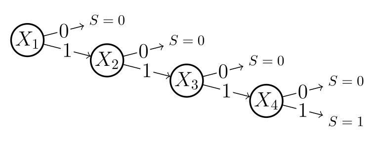

Composite States and the C Matrix
The Problem: Exponential Explosion
Imagine you have a system with 20 binary components. A standard probability table — like a Bayesian network CPT — needs one row for every possible combination of states. That’s \(2^{20} = 1{,}048{,}576\) rows, and every new component doubles the table again.
This is where composite states come in. They’re the core idea behind the matrix-based Bayesian network (MBN) framework, and they let you collapse that million-row table into something manageable — often just a handful of rows.
Reference: Byun, J.-E. and Song, J. (2021). Generalized matrix-based Bayesian network for multi-state systems. Reliability Engineering & System Safety, 211, 107468. https://doi.org/10.1016/j.ress.2021.107468
What Is a Composite State?
A variable \(X\) with \(K\) states (indexed \(0, 1, \ldots, K{-}1\)) gets additional composite states — each one representing a subset of the original states bundled together.
MBNpy assigns these automatically via the B matrix. Here’s what it looks like for a three-state variable:
from mbnpy import variable
v = variable.Variable(name='x', values=[0, 1, 2])
print(v)
<Variable representing x['0', '1', '2'] at 0x1fd93373770>
+---------+-----------+
| index | B |
+=========+===========+
| 0 | {0} |
+---------+-----------+
| 1 | {1} |
+---------+-----------+
| 2 | {2} |
+---------+-----------+
| 3 | {0, 1} |
+---------+-----------+
| 4 | {0, 2} |
+---------+-----------+
| 5 | {1, 2} |
+---------+-----------+
| 6 | {0, 1, 2} |
+---------+-----------+
Index 3 means “state 0 or state 1.” Index 6 means “any state at all.” The power of this is that a single row in a probability table can now stand in for many exact-state combinations at once.
The C Matrix
The C matrix is the data structure at the heart of a CPM (Conditional Probability Matrix). Each row assigns a (possibly composite) state to every variable in the distribution, and a companion probability vector \(p\) gives each row’s probability.
A Concrete Example: Series System
Consider a series system \(S\) with four components \(X_1, X_2, X_3, X_4\). Each component is binary: 0 = failed, 1 = survived. The system fails if any component fails.
The brute-force table
Without composite states, you need all \(2^4 = 16\) combinations (columns: \([S,\; X_1,\; X_2,\; X_3,\; X_4]\)):
S X1 X2 X3 X4
[0 0 0 0 0] <- system fails
[0 0 0 0 1]
[0 0 0 1 0]
[0 0 0 1 1]
[0 0 1 0 0]
[0 0 1 0 1]
[0 0 1 1 0]
[0 0 1 1 1]
[0 1 0 0 0]
[0 1 0 0 1]
[0 1 0 1 0]
[0 1 0 1 1]
[0 1 1 0 0]
[0 1 1 0 1]
[0 1 1 1 0]
[1 1 1 1 1] <- system survives (all Xi = 1)
Since this is a deterministic function, every row has probability 1.
The compressed C matrix (5 rows instead of 16)
A series system has four minimal failure rules (one per component) and one survival rule. Using composite states, these map to just 5 rows:
S X1 X2 X3 X4
[0 0 2 2 2] <- X1 fails; X2, X3, X4 can be anything (8 combinations)
[0 1 0 2 2] <- X1 survives, X2 fails; X3, X4 anything (4 combinations)
[0 1 1 0 2] <- X1, X2 survive, X3 fails; X4 anything (2 combinations)
[0 1 1 1 0] <- X1, X2, X3 survive, X4 fails (1 combination)
[1 1 1 1 1] <- all survive (1 combination)
Here, composite state 2 means {0, 1} — “either failed or survived,” i.e. any state. The five rows cover all 16 combinations (\(8 + 4 + 2 + 1 + 1 = 16\)), and the probability vector is again all ones.
The compression ratio improves dramatically with scale: for \(N\) binary components, \(2^N\) rows collapse to just \(N + 1\). A system with a million components? That’s \(1{,}000{,}001\) rows instead of a number with over 300,000 digits.
The Overlap Trap
You might be tempted to write the C matrix like this — one row per component failure:
S X1 X2 X3 X4
[0 0 2 2 2] <- fails if X1 = 0
[0 2 0 2 2] <- fails if X2 = 0
[0 2 2 0 2] <- fails if X3 = 0
[0 2 2 2 0] <- fails if X4 = 0
[1 1 1 1 1] <- survives
This looks clean, but it’s wrong. The rows overlap: the combination \((S{=}0,\; X_1{=}0,\; X_2{=}0,\; X_3{=}1,\; X_4{=}1)\) is counted by both the first row and the second. This double-counting inflates probabilities beyond 1 during inference.
The fix: branch and bound
The correct 5-row encoding avoids overlap by structuring the rows as a branch-and-bound decomposition — essentially a decision tree. The figure below shows this for the series system:
{kind=link}

Each branch in the tree corresponds directly to a row in the compressed C matrix:
\(X_1 \xrightarrow{0} S = 0\) — The leftmost branch: \(X_1\) fails, so the system fails regardless of the remaining components. Because \(X_2, X_3, X_4\) are never examined on this branch, they get composite state 2 (any state) → Row 1:
[0 0 2 2 2], covering 8 combinations.\(X_1 \xrightarrow{1} X_2 \xrightarrow{0} S = 0\) — \(X_1\) survives, but \(X_2\) fails. \(X_3\) and \(X_4\) are unexamined → Row 2:
[0 1 0 2 2], covering 4 combinations.\(X_1 \xrightarrow{1} X_2 \xrightarrow{1} X_3 \xrightarrow{0} S = 0\) — \(X_1\) and \(X_2\) survive, \(X_3\) fails. \(X_4\) is unexamined → Row 3:
[0 1 1 0 2], covering 2 combinations.\(X_1 \xrightarrow{1} X_2 \xrightarrow{1} X_3 \xrightarrow{1} X_4 \xrightarrow{0} S = 0\) — The first three survive, \(X_4\) fails → Row 4:
[0 1 1 1 0], covering 1 combination.\(X_1 \xrightarrow{1} X_2 \xrightarrow{1} X_3 \xrightarrow{1} X_4 \xrightarrow{1} S = 1\) — All survive → Row 5:
[1 1 1 1 1], covering 1 combination.
Notice the pattern: variables that appear after the terminating branch are never reached, so they take the composite “any state” value. This is exactly why composite states enable compression — they encode “don’t care” conditions that arise naturally from the tree structure.
Because each path through the tree is mutually exclusive, no state combination is ever counted twice.
Key Takeaways
Composite states let a single C matrix row represent an entire family of state combinations. This transforms exponential-sized probability tables into compact, tractable representations — making it possible to run Bayesian inference on systems with thousands or millions of components.
The critical rule when building a C matrix: rows must never overlap. Branch-and-bound decomposition is a reliable way to guarantee this.
Further Reading
Byun, J.-E. and Song, J. (2021). Generalized matrix-based Bayesian network for multi-state systems. Reliability Engineering & System Safety, 211, 107468. https://doi.org/10.1016/j.ress.2021.107468
Getting Started with MBNpy — Introduction to CPMs and variable elimination in MBNpy
Getting Started with the BRC Algorithm — The BRC algorithm and branch-based C matrix construction